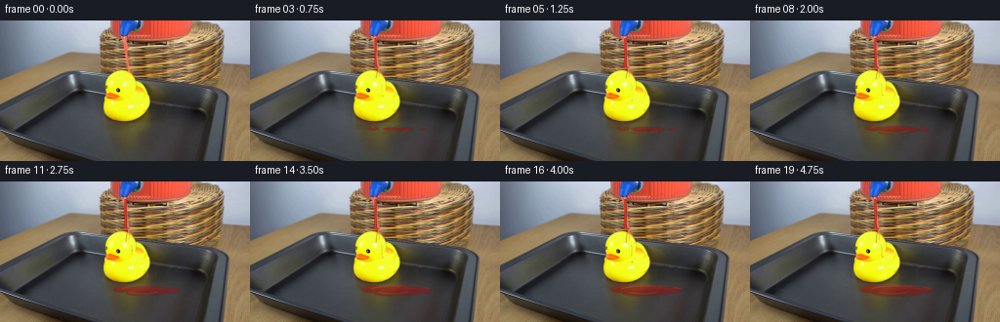
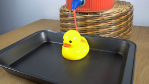
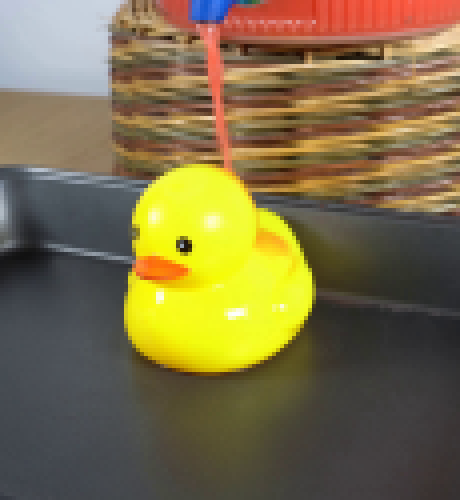
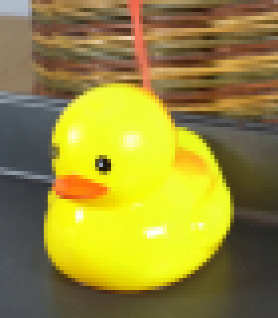
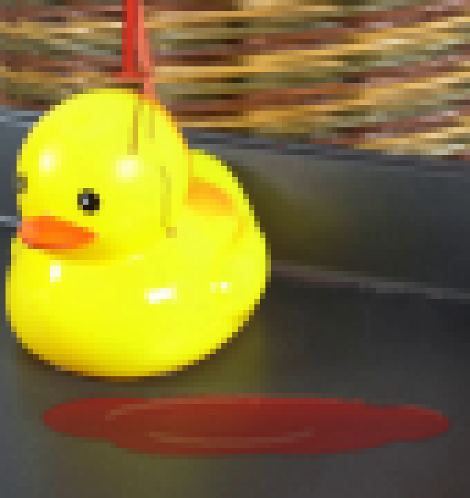
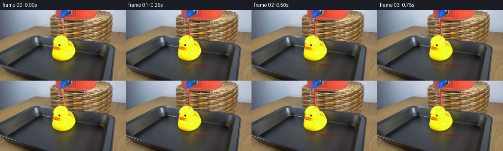
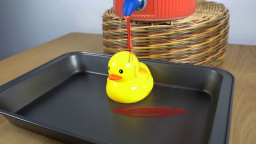
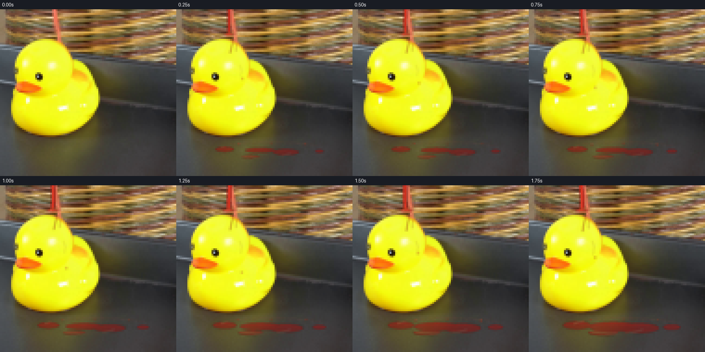

CODING AGENTS AS PIXEL WORLD MODELS
traex/DeepSeek-V4.1-Flash · 0087
点击播放 · 原生 RGB 像素
逐轮保存的候选
回放视频、检查图与代码变化。
每份候选均可单独播放。实际图片检查记录在下方工具轨迹中。
候选 01播放与检查图
点击播放 · 原生 RGB 像素

展开代码变化
--- 上一保存版本
+++ 本次保存版本
@@ -0,0 +1,251 @@
+from __future__ import annotations
+
+from pathlib import Path
+import math
+
+import numpy as np
+from PIL import Image, ImageDraw, ImageFilter
+
+import artifact_io
+
+
+CASE_DIR = Path(__file__).resolve().parent
+WIDTH, HEIGHT = 256, 144
+FRAME_COUNT, FPS = 20, 4
+SCALE = 4
+
+
+def smoothstep(edge0: float, edge1: float, value: float) -> float:
+ x = max(0.0, min(1.0, (value - edge0) / (edge1 - edge0)))
+ return x * x * (3.0 - 2.0 * x)
+
+
+def rgba_layer() -> tuple[Image.Image, ImageDraw.ImageDraw]:
+ layer = Image.new("RGBA", (WIDTH * SCALE, HEIGHT * SCALE), (0, 0, 0, 0))
+ return layer, ImageDraw.Draw(layer, "RGBA")
+
+
+def scaled_points(points: list[tuple[float, float]]) -> list[tuple[int, int]]:
+ return [(round(x * SCALE), round(y * SCALE)) for x, y in points]
+
+
+def ellipse(draw: ImageDraw.ImageDraw, box, fill) -> None:
+ draw.ellipse(tuple(round(v * SCALE) for v in box), fill=fill)
+
+
+def line(draw: ImageDraw.ImageDraw, points, fill, width: float) -> None:
+ draw.line(scaled_points(points), fill=fill, width=max(1, round(width * SCALE)), joint="curve")
+
+
+def add_puddle(layer: Image.Image, t: float) -> None:
+ growth = smoothstep(0.0, 4.6, t)
+ if growth <= 0.0:
+ return
+
+ width, height = WIDTH * SCALE, HEIGHT * SCALE
+ yy, xx = np.mgrid[0:height, 0:width].astype(np.float32)
+ xx /= SCALE
+ yy /= SCALE
+
+ # A flattened, slightly irregular puddle assembled from overlapping lobes.
+ rx = 8.0 + 18.0 * growth
+ ry = 1.4 + 4.1 * growth
+ dx = (xx - (145.0 + 1.5 * growth)) / rx
+ dy = (yy - (111.0 + 0.6 * growth)) / ry
+ mask = dx * dx + dy * dy <= 1.0
+
+ lobes = [
+ (126.0, 110.5, 5.0 + 8.5 * growth, 1.5 + 2.5 * growth),
+ (159.0, 112.0, 7.0 + 13.0 * growth, 1.8 + 3.3 * growth),
+ (177.0, 111.5, 2.5 + 7.0 * growth, 1.0 + 2.2 * growth),
+ (140.0, 114.5, 5.0 + 10.0 * growth, 1.0 + 2.0 * growth),
+ ]
+ for cx, cy, ex, ey in lobes:
+ nx = (xx - cx) / ex
+ ny = (yy - cy) / ey
+ mask |= nx * nx + ny * ny <= 1.0
+
+ # Keep the liquid on the horizontal tray surface and out of the duck body.
+ mask &= (yy >= 104.3) & (yy <= 120.0) & (xx >= 112.0) & (xx <= 194.0)
+ if not mask.any():
+ return
+
+ edge_distance = np.sqrt(np.maximum(0.0, 1.0 - (dx * dx + dy * dy)))
+ sheen = np.clip((112.0 - yy) / 7.0, 0.0, 1.0)
+ ripple = 0.5 + 0.5 * np.sin(xx * 2.7 + yy * 5.1 + t * 2.1)
+
+ color = np.empty((height, width, 4), dtype=np.uint8)
+ color[..., 0] = np.clip(142 + 47 * sheen + 12 * ripple, 0, 255).astype(np.uint8)
+ color[..., 1] = np.clip(14 + 13 * sheen + 4 * ripple, 0, 255).astype(np.uint8)
+ color[..., 2] = np.clip(12 + 11 * sheen + 3 * ripple, 0, 255).astype(np.uint8)
+ color[..., 3] = np.where(mask, (124 + 45 * sheen + 13 * edge_distance).astype(np.uint8), 0)
+
+ puddle = Image.fromarray(color, "RGBA")
+ layer.alpha_composite(puddle)
+
+ # A thin specular rim gives the shallow liquid a readable free surface.
+ rim_draw = ImageDraw.Draw(layer, "RGBA")
+ rim_alpha = int(42 + 35 * growth)
+ rim_box = (
+ 124.0,
+ 106.5,
+ 178.0 + 8.0 * growth,
+ 113.0 + 2.0 * growth,
+ )
+ rim_draw.arc(
+ tuple(round(v * SCALE) for v in rim_box),
+ 188,
+ 347,
+ fill=(255, 116, 83, rim_alpha),
+ width=max(1, round(0.55 * SCALE)),
+ )
+ rim_draw.arc(
+ tuple(round(v * SCALE) for v in (130.0, 109.0, 162.0, 115.0)),
+ 15,
+ 152,
+ fill=(246, 83, 58, int(25 + 30 * growth)),
+ width=max(1, round(0.45 * SCALE)),
+ )
+
+
+def add_runoff(draw: ImageDraw.ImageDraw, t: float) -> None:
+ # Liquid creeps down the forehead and the near side of the duck.
+ creep = smoothstep(0.3, 4.2, t)
+ line(
+ draw,
+ [(130.0, 50.5), (130.2, 53.0), (129.4, 56.0), (128.9, 58.5 + 4.0 * creep)],
+ (190, 31, 21, 118),
+ 0.65,
+ )
+ line(
+ draw,
+ [(131.0, 51.0), (132.1, 54.0), (132.0, 57.5 + 2.5 * creep)],
+ (222, 48, 30, 88),
+ 0.48,
+ )
+ line(
+ draw,
+ [(134.0, 65.0), (135.0, 68.0), (134.6, 71.0 + 5.0 * creep)],
+ (177, 31, 21, int(30 + 45 * creep)),
+ 0.45,
+ )
+
+ # A bead forms below the cheek and eventually releases.
+ bead_cycle = (t * 0.74) % 1.0
+ bead_y = 70.0 + 13.0 * bead_cycle
+ bead_x = 135.0 + 0.8 * math.sin(bead_cycle * math.pi)
+ ellipse(draw, (bead_x - 0.55, bead_y - 0.7, bead_x + 0.55, bead_y + 0.7),
+ (211, 40, 26, int(70 + 45 * creep)))
+ ellipse(draw, (bead_x - 0.22, bead_y - 0.42, bead_x + 0.12, bead_y - 0.08),
+ (255, 126, 94, 105))
+
+
+def add_stream_and_impact(layer: Image.Image, draw: ImageDraw.ImageDraw, t: float) -> None:
+ pulse = 0.5 + 0.5 * math.sin(t * math.tau * 2.4)
+ flow = smoothstep(0.05, 1.25, t)
+ stream_width = 1.10 + 0.70 * flow + 0.16 * pulse
+
+ stream_points = []
+ for index in range(13):
+ y = 18.0 + index * 2.55
+ x = 128.2 + 0.32 * math.sin(index * 0.74 + t * 7.4) * flow
+ stream_points.append((x, y))
+
+ line(draw, stream_points, (125, 21, 15, 225), stream_width + 0.55)
+ line(draw, stream_points, (203, 37, 25, 238), stream_width)
+ line(draw, [(x - 0.24, y) for x, y in stream_points], (246, 79, 50, 210),
+ max(0.35, stream_width * 0.28))
+
+ impact_x = stream_points[-1][0]
+ impact_y = stream_points[-1][1]
+ splash = smoothstep(0.1, 1.8, t)
+
+ # Impact lens and crown sit on the crown of the duck's head.
+ ellipse(
+ draw,
+ (impact_x - 2.7 - 0.7 * splash, impact_y - 0.6,
+ impact_x + 3.0 + 0.8 * splash, impact_y + 0.9),
+ (180, 29, 20, int(105 + 55 * splash)),
+ )
+ ellipse(
+ draw,
+ (impact_x - 1.7, impact_y - 0.7, impact_x + 0.6, impact_y + 0.15),
+ (255, 105, 76, 180),
+ )
+ draw.arc(
+ tuple(round(v * SCALE) for v in (
+ impact_x - 4.2 - 1.3 * splash,
+ impact_y - 1.3,
+ impact_x + 4.5 + 1.4 * splash,
+ impact_y + 2.2,
+ )),
+ 205,
+ 335,
+ fill=(236, 64, 38, int(90 + 65 * splash)),
+ width=max(1, round(0.55 * SCALE)),
+ )
+
+ # Deterministic droplets fan out from the impact and fall around the duck.
+ droplets = [
+ (-2.3, -1.5, 3.6, 0.10),
+ (-1.2, -2.0, 4.2, 0.32),
+ (1.4, -1.8, 4.0, 0.19),
+ (2.5, -1.2, 3.4, 0.43),
+ (-2.8, -0.7, 2.7, 0.57),
+ (3.0, -0.4, 2.9, 0.68),
+ ]
+ for i, (vx, vy, gravity, phase) in enumerate(droplets):
+ age = (t + phase) % 0.72
+ if age < 0.03:
+ continue
+ x = impact_x + vx * age + 0.6 * math.sin(t * 4.0 + i)
+ y = impact_y + vy * age + 0.5 * gravity * age * age
+ radius = 0.28 + 0.20 * (1.0 - age / 0.72)
+ ellipse(draw, (x - radius, y - radius, x + radius, y + radius),
+ (224, 50, 31, 175))
+
+ # Tiny splashes at the puddle's leading edge.
+ for i, x0 in enumerate((134.0, 151.0, 169.0)):
+ age = (t * 0.9 + i * 0.31) % 0.63
+ x = x0 + (i - 1) * age * 1.8
+ y = 108.2 - 3.0 * age + 2.8 * age * age
+ ellipse(draw, (x - 0.32, y - 0.40, x + 0.32, y + 0.40),
+ (231, 57, 35, 155))
+
+
+def render_frame(base: Image.Image, frame_index: int) -> Image.Image:
+ if frame_index == 0:
+ return base.copy()
+
+ t = frame_index / FPS
+ layer, draw = rgba_layer()
+
+ add_puddle(layer, t)
+
+ # The overlay draw object must follow alpha_composite operations.
+ draw = ImageDraw.Draw(layer, "RGBA")
+ add_runoff(draw, t)
+ add_stream_and_impact(layer, draw, t)
+
+ layer = layer.filter(ImageFilter.GaussianBlur(radius=0.22 * SCALE))
+ native_overlay = layer.resize((WIDTH, HEIGHT), Image.Resampling.LANCZOS)
+ return Image.alpha_composite(base.convert("RGBA"), native_overlay).convert("RGB")
+
+
+def generate() -> np.ndarray:
+ source = Image.open(CASE_DIR / "first_frame.png").convert("RGB")
+ if source.size != (WIDTH, HEIGHT):
+ raise ValueError(f"first_frame.png must be {WIDTH}x{HEIGHT}, got {source.size}")
+
+ frames = []
+ for frame_index in range(FRAME_COUNT):
+ frames.append(np.asarray(render_frame(source, frame_index), dtype=np.uint8))
+ result = np.stack(frames, axis=0)
+
+ if not np.array_equal(result[0], np.asarray(source, dtype=np.uint8)):
+ raise AssertionError("frame 0 must remain pixel-identical to first_frame.png")
+ return result
+
+
+if __name__ == "__main__":
+ artifact_io.save(generate(), CASE_DIR)
候选 02播放与检查图
点击播放 · 原生 RGB 像素

展开代码变化
--- 上一保存版本
+++ 本次保存版本
@@ -80,7 +80,7 @@
color[..., 2] = np.clip(12 + 11 * sheen + 3 * ripple, 0, 255).astype(np.uint8)
color[..., 3] = np.where(mask, (124 + 45 * sheen + 13 * edge_distance).astype(np.uint8), 0)
- puddle = Image.fromarray(color, "RGBA")
+ puddle = Image.fromarray(color)
layer.alpha_composite(puddle)
# A thin specular rim gives the shallow liquid a readable free surface.
可观测工具轨迹
实际执行的命令与返回图片。
命令 1exit 0
/bin/bash -c "pwd && rg --files -g '"'!*.git*'"' | sed -n '1,200p'"
命令 2exit 0
/bin/bash -c 'cat prompt.txt'
命令 3exit 0
/bin/bash -c 'cat GENERATION_RULES.md'
命令 4exit 0
/bin/bash -c "find . -maxdepth 2 -type f -printf '%p %s bytes\\n' | sort"
命令 5exit 0
/bin/bash -c "sed -n '1,240p' artifact_io.py"
命令 6exit 0
/bin/bash -c "sed -n '1,260p' player_template.html"
命令 7exit 0
/bin/bash -c "python - <<'PY'
from PIL import Image
im=Image.open('first_frame.png')
print(im.mode, im.size)
print(im.getpixel((0,0)), im.getpixel((255,143)))
PY"命令 8exit 0
/bin/bash -c "python - <<'PY'
from PIL import Image
im=Image.open('first_frame.png')
im.crop((75,10,190,135)).resize((460,500),Image.Resampling.NEAREST).save('.tmp/crop.png')
PY"命令 9exit 0
/bin/bash -c "python - <<'PY'
try:
import cv2; print('cv2',cv2.__version__)
except Exception as e: print('no cv2',e)
try:
import scipy; print('scipy',scipy.__version__)
except Exception as e: print('no scipy',e)
PY"命令 10exit 0
/bin/bash -c "python - <<'PY'
from PIL import Image
import numpy as np
im=np.array(Image.open('first_frame.png'))
# print red/yellow/blue masks bounding boxes
for name,cond in [
('red',(im[:,:,0]>140)&(im[:,:,0]>im[:,:,1]*1.5)&(im[:,:,0]>im[:,:,2]*1.5)),
('yellow',(im[:,:,0]>150)&(im[:,:,1]>100)&(im[:,:,2]<60)),
('blue',(im[:,:,2]>100)&(im[:,:,2]>im[:,:,0]*1.2)),
]:
ys,xs=np.where(cond)
print(name, len(xs), (xs.min(),ys.min(),xs.max(),ys.max()) if len(xs) else None)
# per-row ranges for red in spout/stream area
for y in range(18,58,2):
xs=np.where((im[y,:,0]>130)&(im[y,:,0]>im[y,:,1]*1.5)&(im[y,:,0]>im[y,:,2]*1.5))[0]
if len(xs): print(y,xs.min(),xs.max(),im[y,xs[len(xs)//2]])
PY"命令 11exit 0
/bin/bash -c "python - <<'PY'
from PIL import Image
import numpy as np
im=np.array(Image.open('first_frame.png'))
# crop mouth region zoom with grid? list local colors around red stream x126-133 y19-35
for y in range(18,37):
print(y, [tuple(im[y,x]) for x in range(122,137,2)])
PY"命令 12exit 0
/bin/bash -c "python - <<'PY'
from PIL import Image
im=Image.open('first_frame.png')
im.crop((95,30,165,110)).resize((560,640),Image.Resampling.NEAREST).save('.tmp/duck_crop.png')
PY"命令 13exit 0
/bin/bash -c 'python generate.py'
命令 14exit 0
/bin/bash -c "python - <<'PY'
from PIL import Image
im=Image.open('frames/19.png')
im.crop((105,35,190,125)).resize((680,720),Image.Resampling.NEAREST).save('.tmp/final_crop.png')
PY"命令 15exit 0
/bin/bash -c "python - <<'PY'
from PIL import Image
import numpy as np
frames=[np.asarray(Image.open(f'frames/{i:02d}.png')).astype(np.int16) for i in range(20)]
for i in range(1,20):
d=np.abs(frames[i]-frames[i-1]); print(i, int((d>8).any(2).sum()), round(float(d.mean()),3), int(d.max()))
PY"命令 16exit 0
/bin/bash -c "python - <<'PY'
import numpy as np
from PIL import Image
for i in [0,1,5,10,15,19]:
a=np.asarray(Image.open(f'frames/{i:02d}.png'))
print(i,a.shape,a.dtype,a.min(),a.max())
PY"命令 17exit 0
/bin/bash -c "python - <<'PY'
from PIL import Image
import numpy as np
im=np.array(Image.open('first_frame.png'))
# crop actual duck edge per y, classify yellow-ish mask and print bounds
for y in range(38,111,4):
cond=(im[y,:,0]>120)&(im[y,:,1]>70)&(im[y,:,2]<90)&(im[y,:,0]>im[y,:,2]*1.6)
xs=np.where(cond)[0]
# limit plausible duck x
xs=xs[(xs>=100)&(xs<=180)]
print(y, (xs.min(),xs.max()) if len(xs) else None)
PY"命令 18exit 0
/bin/bash -c "python - <<'PY'
from PIL import Image, ImageDraw
frames=[Image.open(f'frames/{i:02d}.png').crop((100,35,195,125)).resize((380,360),Image.Resampling.NEAREST) for i in range(8)]
out=Image.new('RGB',(4*380,2*380),(25,28,35))
d=ImageDraw.Draw(out)
for i,im in enumerate(frames):
x=(i%4)*380;y=(i//4)*380
out.paste(im,(x,y+20)); d.text((x+5,4+y),f'{i/4:.2f}s',fill='white')
out.save('.tmp/early.png')
PY"命令 19exit 0
/bin/bash -c "ls -la .tmp | sed -n '1,120p' && find frames -type f | wc -l"
命令 20exit 0
/bin/bash -c 'git status --short'
命令 21exit 0
/bin/bash -c "python - <<'PY'
from PIL import Image
import numpy as np
im=np.array(Image.open('first_frame.png'))
for y in range(30,70):
# yellow high saturation
cond=(im[y,:,0]>150)&(im[y,:,1]>100)&(im[y,:,2]<100)&(im[y,:,0]>im[y,:,2]*1.5)
xs=np.where(cond)[0]; xs=xs[(xs>90)&(xs<190)]
if len(xs): print(y,xs.min(),xs.max())
PY"命令 22exit 0
/bin/bash -c "python generate.py && python - <<'PY'
from pathlib import Path
import numpy as np
from PIL import Image
src=np.asarray(Image.open('first_frame.png').convert('RGB'))
f0=np.asarray(Image.open('frames/00.png'))
z=np.load('pixels.npz')['pixels']
print('frame0 exact:', np.array_equal(src,f0))
print('tensor:',z.shape,z.dtype,'range',int(z.min()),int(z.max()))
print('frames:',len(list(Path('frames').glob('*.png'))))
print('artifacts:',[(p.name,p.stat().st_size) for p in [Path('pixels.npz'),Path('index.html'),Path('inspection.png'),Path('transition_check.png')]])
PY"视觉工具实际返回图片 1

视觉工具实际返回图片 2

视觉工具实际返回图片 3

视觉工具实际返回图片 4

视觉工具实际返回图片 5

视觉工具实际返回图片 6

视觉工具实际返回图片 7

视觉工具实际返回图片 8
视觉工具实际返回图片 9

保存候选 2 份；完成命令 22 次；可验证图片返回 9 张。原始 API 响应与完整日志保留在本地。